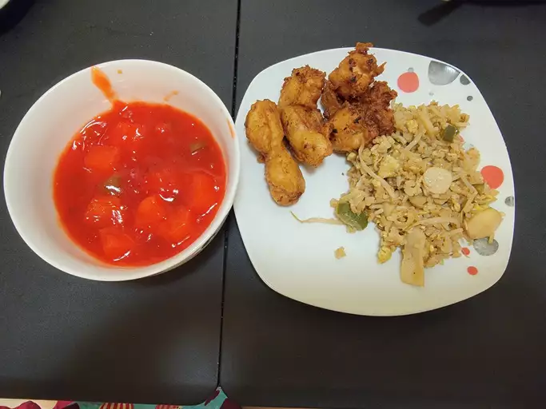

Home
Sweet and Sour Chicken

Image from
Kiki
Description
This sweet and sour chicken recipe makes crispy fried chicken pieces with pineapple and bell pepper served with a homemade tangy and sweet sauce.
Ingredients
- For the sauce: water, pineapple juice from a can, white sugar, white vinegar, and orange food coloring
- For the batter: cornstarch, self-rising flour, vegetable oil, an egg, salt, and white pepper
- Chicken: Cut eight boneless, skinless chicken breast halves into 1-inch cubes for this sweet and sour chicken recipe.
- Pineapple and green pepper : Pineapple chunks and two green bell peppers (cut into 1-inch pieces) give the dish color and flavor.
Steps
Here’s a brief overview of what you can expect when you make this sweet and sour chicken recipe:
- Boil 1 ½ cups of water with pineapple juice, sugar, vinegar, and orange food coloring.
- Make a cornstarch slurry, then mix it into the sauce until thickened.
- Make the batter, then stir in the chicken pieces until well-coated.
- Fry the chicken.
- Layer the peppers, pineapple, and chicken on a platter.
- Pour the sauce over the top.